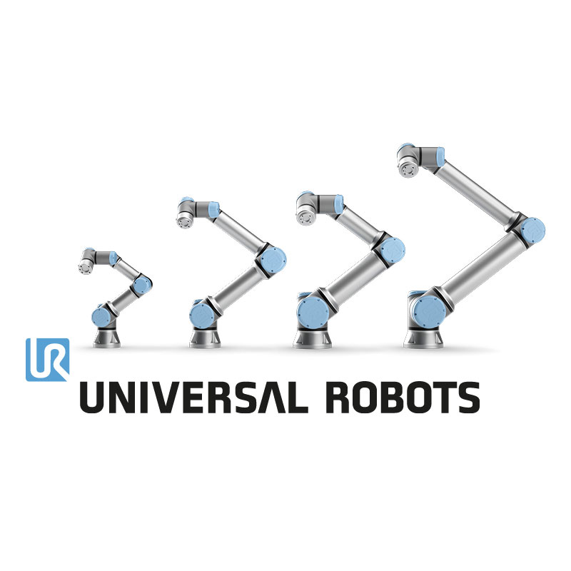
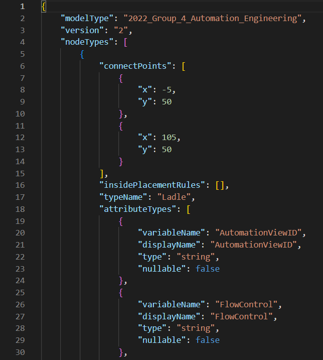
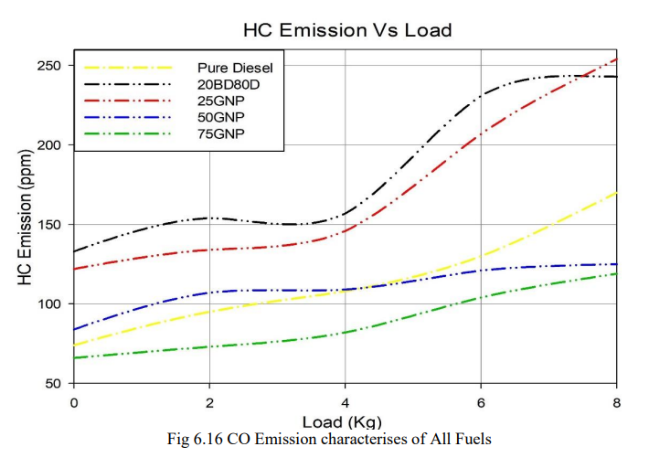

| Industry Deployment Partner | Volkswagen AG (Automotive Vehicle Production Line) |
|---|---|
| Academic Host | Otto-von-Guericke-Universität Magdeburg — Department of Factory Operations and Automation |
| Manipulator Kinematics | 6-Degree-of-Freedom (6-DOF) Industrial Articulated Robotic Arm |
| Perception & 3D Sensing | Overhead 3D Structured Light Scanner generating dense point clouds of disordered bin contents |
| Computer Vision & Matching | Point Cloud Library (PCL), CAD Model Surface Matching, ICP (Iterative Closest Point) 6D Pose Estimation |
| Motion & Collision Avoidance | Inverse Kinematics with dynamic bounding volume trajectory planning avoiding bin rim collisions |
| End-Effector Mechanism | Pneumatic dual-finger adaptive gripper with compliance sensors and magnetic assist |
| Cycle Time & Reliability | < 4.8 seconds per pick, place, and re-orient sequence with > 98.4% grasp success rate |
Robotic Cell & Kinematic Verification




1. The Automotive Bin-Picking Challenge
In automotive production lines, incoming stamped parts, brackets, and forgings arrive randomly tangled inside deep wire mesh or metal bins. Traditional mechanical vibratory bowl feeders cannot accommodate varied geometries or sensitive surface finishes. The goal was to deploy a flexible, autonomous robotic vision station that could dynamically identify and extract components without human intervention.
2. 3D Point Cloud Perception & CAD Pose Estimation
An overhead structured-light camera system captures high-resolution 3D point clouds of the container. Raw point clouds are filtered for noise, segmented using Euclidean clustering, and matched against the component's CAD surface model via normal-aligned ICP algorithms. The system computes the precise 6-DOF Cartesian pose (X, Y, Z, Roll, Pitch, Yaw) for candidate parts with highest accessibility and zero entanglements.
3. Trajectory Generation & Collision-Free Grasping
Using real-time inverse kinematics, the motion planner calculates an optimal approach vector, gripper orientation, and retreat path. Deep collision margins prevent the robot gripper or wrist axis from contacting the bin sidewalls or neighboring tangled parts.